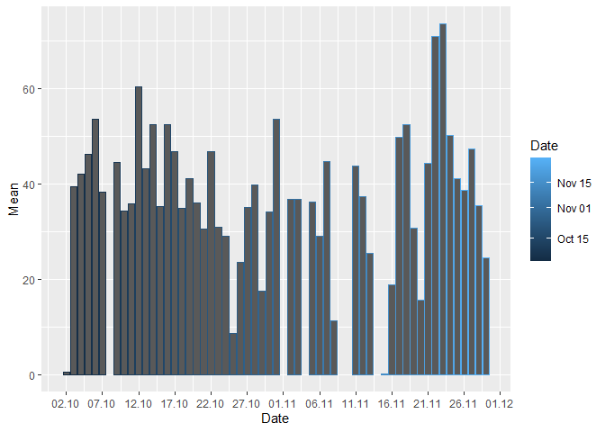
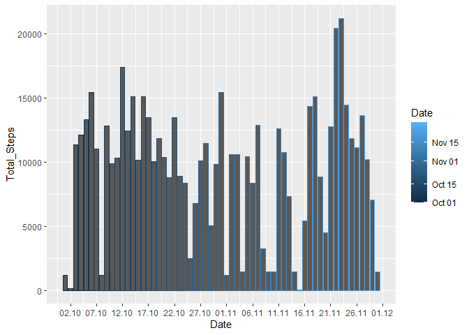
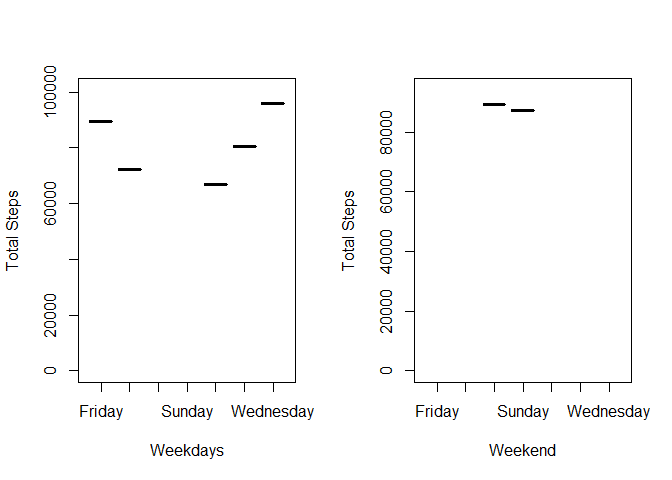

R Notebook
In this document, personal movement data will be analysed in exploratory way. The data is about taken steps in 61 days.
0.0.1 PREPROCESSING THE DATA
Let’s unzip our dataset.
unzip("./activity.zip", exdir = getwd())This is a comma seperated file. So we create our dataframe and deploy it in the variable data.
curr_locale <- Sys.getlocale("LC_TIME")
Sys.setlocale("LC_TIME","en_US.UTF-8")## Warning in Sys.setlocale("LC_TIME", "en_US.UTF-8"): İşletim Sistemi yereli
## "en_US.UTF-8" e ayarlama isteğinin gerçekleştirelemeyeceğini raporladı## [1] ""Sys.setlocale("LC_TIME",curr_locale)## [1] "Turkish_Turkey.1254"dev_null <- Sys.setlocale("LC_TIME", "english")
data <- read.csv('./activity.csv', sep = ",")Let’s have a look of the first observations of the data.
head(data)## steps date interval
## 1 NA 2012-10-01 0
## 2 NA 2012-10-01 5
## 3 NA 2012-10-01 10
## 4 NA 2012-10-01 15
## 5 NA 2012-10-01 20
## 6 NA 2012-10-01 25In the dataset there is a column named steps which we are interested mostly. It seems there are NA’s in our data. And there is a date column and interval column. So our dataset is kind of a timeseries dataset. Let’s have a look of structure of the data.
str(data)## 'data.frame': 17568 obs. of 3 variables:
## $ steps : int NA NA NA NA NA NA NA NA NA NA ...
## $ date : chr "2012-10-01" "2012-10-01" "2012-10-01" "2012-10-01" ...
## $ interval: int 0 5 10 15 20 25 30 35 40 45 ...Date is deployed as character and others are integers. And dimension of our data:
dim(data)## [1] 17568 3We know we have NA values, and how many values are NA?
colSums(is.na(data))## steps date interval
## 2304 0 0Son only steps column has NAs. What about the ratio of NA values?
sum(is.na(data$steps))/length(data$steps)## [1] 0.1311475Now let’s transform our date column from char to “YYMMDD” date format and create a new column as factor that shows which weekday is the date. So we will be able to have opinions of subject’s behaviour in weekdays.
data$date <- as.Date(data$date)
data$weekday <- as.factor(weekdays(data$date))
summary(data)## steps date interval weekday
## Min. : 0.00 Min. :2012-10-01 Min. : 0.0 Friday :2592
## 1st Qu.: 0.00 1st Qu.:2012-10-16 1st Qu.: 588.8 Monday :2592
## Median : 0.00 Median :2012-10-31 Median :1177.5 Saturday :2304
## Mean : 37.38 Mean :2012-10-31 Mean :1177.5 Sunday :2304
## 3rd Qu.: 12.00 3rd Qu.:2012-11-15 3rd Qu.:1766.2 Thursday :2592
## Max. :806.00 Max. :2012-11-30 Max. :2355.0 Tuesday :2592
## NA's :2304 Wednesday:25920.0.2 PLOTTING THE DATA
Now we have a better form of data and let’s take a look in which day our subjects have more steps? First we make groups to see steps taken each day.
library(dplyr)##
## Attaching package: 'dplyr'## The following objects are masked from 'package:stats':
##
## filter, lag## The following objects are masked from 'package:base':
##
## intersect, setdiff, setequal, unionsteps_by_days <- aggregate(data$steps, by=list(date = data$date), FUN=sum, na.rm=TRUE)
names(steps_by_days) <- c("Date","Total_Steps")Now we have a group of dates. Let’s take a look at the plot of steps taken in days.
library(ggplot2)
g <- ggplot(steps_by_days,aes(Date,Total_Steps))
g + geom_col(aes(colour=Date)) +scale_x_date(date_breaks = "5 days", date_labels = "%d.%m")
It looks like we have maximum steps number in date 23.11. And probably because of NA values we have zero bars. Let’s find average value of steps taken in days in same way of grouping.
mean_by_days <- aggregate(data$steps, by=list(weekday = data$date), FUN = mean, na.rm=TRUE)names(mean_by_days) <- c("Date","Mean")g <- ggplot(mean_by_days,aes(Date, Mean))
g + geom_col(aes(colour=Date)) +scale_x_date(date_breaks = "5 days", date_labels = "%d.%m")## Warning: Removed 8 rows containing missing values (position_stack).
And the median of steps in each days:
tapply(data$steps, data$date, median)## 2012-10-01 2012-10-02 2012-10-03 2012-10-04 2012-10-05 2012-10-06 2012-10-07
## NA 0 0 0 0 0 0
## 2012-10-08 2012-10-09 2012-10-10 2012-10-11 2012-10-12 2012-10-13 2012-10-14
## NA 0 0 0 0 0 0
## 2012-10-15 2012-10-16 2012-10-17 2012-10-18 2012-10-19 2012-10-20 2012-10-21
## 0 0 0 0 0 0 0
## 2012-10-22 2012-10-23 2012-10-24 2012-10-25 2012-10-26 2012-10-27 2012-10-28
## 0 0 0 0 0 0 0
## 2012-10-29 2012-10-30 2012-10-31 2012-11-01 2012-11-02 2012-11-03 2012-11-04
## 0 0 0 NA 0 0 NA
## 2012-11-05 2012-11-06 2012-11-07 2012-11-08 2012-11-09 2012-11-10 2012-11-11
## 0 0 0 0 NA NA 0
## 2012-11-12 2012-11-13 2012-11-14 2012-11-15 2012-11-16 2012-11-17 2012-11-18
## 0 0 NA 0 0 0 0
## 2012-11-19 2012-11-20 2012-11-21 2012-11-22 2012-11-23 2012-11-24 2012-11-25
## 0 0 0 0 0 0 0
## 2012-11-26 2012-11-27 2012-11-28 2012-11-29 2012-11-30
## 0 0 0 0 NABecause of NA’s our median is meaningless. Let’s take a look of 5 minute intervals:
five_min_intervals <- filter(data,interval == 5)five_min_intervals## steps date interval weekday
## 1 NA 2012-10-01 5 Monday
## 2 0 2012-10-02 5 Tuesday
## 3 0 2012-10-03 5 Wednesday
## 4 0 2012-10-04 5 Thursday
## 5 0 2012-10-05 5 Friday
## 6 0 2012-10-06 5 Saturday
## 7 0 2012-10-07 5 Sunday
## 8 NA 2012-10-08 5 Monday
## 9 0 2012-10-09 5 Tuesday
## 10 18 2012-10-10 5 Wednesday
## 11 0 2012-10-11 5 Thursday
## 12 0 2012-10-12 5 Friday
## 13 0 2012-10-13 5 Saturday
## 14 0 2012-10-14 5 Sunday
## 15 0 2012-10-15 5 Monday
## 16 0 2012-10-16 5 Tuesday
## 17 0 2012-10-17 5 Wednesday
## 18 0 2012-10-18 5 Thursday
## 19 0 2012-10-19 5 Friday
## 20 0 2012-10-20 5 Saturday
## 21 0 2012-10-21 5 Sunday
## 22 0 2012-10-22 5 Monday
## 23 0 2012-10-23 5 Tuesday
## 24 0 2012-10-24 5 Wednesday
## 25 0 2012-10-25 5 Thursday
## 26 0 2012-10-26 5 Friday
## 27 0 2012-10-27 5 Saturday
## 28 0 2012-10-28 5 Sunday
## 29 0 2012-10-29 5 Monday
## 30 0 2012-10-30 5 Tuesday
## 31 0 2012-10-31 5 Wednesday
## 32 NA 2012-11-01 5 Thursday
## 33 0 2012-11-02 5 Friday
## 34 0 2012-11-03 5 Saturday
## 35 NA 2012-11-04 5 Sunday
## 36 0 2012-11-05 5 Monday
## 37 0 2012-11-06 5 Tuesday
## 38 0 2012-11-07 5 Wednesday
## 39 0 2012-11-08 5 Thursday
## 40 NA 2012-11-09 5 Friday
## 41 NA 2012-11-10 5 Saturday
## 42 0 2012-11-11 5 Sunday
## 43 0 2012-11-12 5 Monday
## 44 0 2012-11-13 5 Tuesday
## 45 NA 2012-11-14 5 Wednesday
## 46 0 2012-11-15 5 Thursday
## 47 0 2012-11-16 5 Friday
## 48 0 2012-11-17 5 Saturday
## 49 0 2012-11-18 5 Sunday
## 50 0 2012-11-19 5 Monday
## 51 0 2012-11-20 5 Tuesday
## 52 0 2012-11-21 5 Wednesday
## 53 0 2012-11-22 5 Thursday
## 54 0 2012-11-23 5 Friday
## 55 0 2012-11-24 5 Saturday
## 56 0 2012-11-25 5 Sunday
## 57 0 2012-11-26 5 Monday
## 58 0 2012-11-27 5 Tuesday
## 59 0 2012-11-28 5 Wednesday
## 60 0 2012-11-29 5 Thursday
## 61 NA 2012-11-30 5 FridayThese NA’s are problem. Average values of steps in 5 minute intervals.
average_of_five_min_int <- aggregate(five_min_intervals$steps, by = list(average = five_min_intervals$steps), FUN = mean, na.rm=TRUE)average_of_five_min_int## average x
## 1 0 0
## 2 18 18Average of five minute intervals:
mean(five_min_intervals$steps, na.rm=TRUE)## [1] 0.3396226Maximum steps of five minute intervals:
max(five_min_intervals$steps,na.rm = TRUE)## [1] 180.0.3 FILLING NA’S
Let’s take a look at steps taken weekdays:
steps_by_weekdays <- aggregate(data$steps, by=list(weekday = data$weekday), FUN=sum, na.rm=TRUE)names(steps_by_weekdays)= c("weekday","total_steps")steps_by_weekdays[c('weekday','total_steps')]## weekday total_steps
## 1 Friday 86518
## 2 Monday 69824
## 3 Saturday 87748
## 4 Sunday 85944
## 5 Thursday 65702
## 6 Tuesday 80546
## 7 Wednesday 94326We see wednesday is the most steps taken day.
g <- ggplot(steps_by_weekdays,aes(weekday, total_steps))
g + geom_col(aes(colour=weekday)) 
Let’s find the mean of steps taken each weekday. Let’s find how many days we have observed the taken steps
length(unique(data$date))## [1] 61Now let’s redefine our grouped data and see our average of steps in weekdays:
average_weekdays <- steps_by_weekdays
average_weekdays$total_steps <- average_weekdays$total_steps/61
average_weekdays## weekday total_steps
## 1 Friday 1418.328
## 2 Monday 1144.656
## 3 Saturday 1438.492
## 4 Sunday 1408.918
## 5 Thursday 1077.082
## 6 Tuesday 1320.426
## 7 Wednesday 1546.328And how many intervals do we have in a day?
length(unique(data$interval))## [1] 288We can subset each interval and find mean of the steps take by intervals but we don’t have much information about intervals. We have too much NA for 5 minute intervals, so mean of them won’t be meaningful. That’s why we can fill NA’s with each weekday’s average step number by the interval. Let’s code what I meant:
average_weekdays$total_steps <- average_weekdays$total_steps / 288
average_weekdays## weekday total_steps
## 1 Friday 4.924750
## 2 Monday 3.974499
## 3 Saturday 4.994763
## 4 Sunday 4.892077
## 5 Thursday 3.739868
## 6 Tuesday 4.584813
## 7 Wednesday 5.369194But for sure we can’t have a 4.92 steps to take. We have two options here, Either we can round those numbers up or down according to which side they are close to, or we can distribute for ex 1418 steps to friday NA’s. I will take the first way.
average_weekdays$total_steps <- round(average_weekdays$total_steps)
average_weekdays## weekday total_steps
## 1 Friday 5
## 2 Monday 4
## 3 Saturday 5
## 4 Sunday 5
## 5 Thursday 4
## 6 Tuesday 5
## 7 Wednesday 5So for Mondays and Thursdays we should fill NA’S with 4 and other days we should fill NA’s with 5. Now let’s fill NA’s with those numbers:
data_filled <- data
for (i in 1:length(data_filled$steps)){
if ((is.na(data_filled$steps[i])) & (data_filled$weekday[i] == "Friday" | data_filled$weekday[i] == "Saturday" | data_filled$weekday[i] == "Sunday" | data_filled$weekday[i] == "Tuesday" | data_filled$weekday[i] == "Wednesday")){
data_filled$steps[i] <- 5 }
if ((is.na(data_filled$steps[i])) & (data_filled$weekday[i] == "Monday" | data_filled$weekday[i] == "Thursday")){
data_filled$steps[i] <- 4
}
}Now let’s take a look our new data:
head(data_filled)## steps date interval weekday
## 1 4 2012-10-01 0 Monday
## 2 4 2012-10-01 5 Monday
## 3 4 2012-10-01 10 Monday
## 4 4 2012-10-01 15 Monday
## 5 4 2012-10-01 20 Monday
## 6 4 2012-10-01 25 MondayMondays were NA and now we filled NA’s with 4 for Mondays. After imputing NA’s we should take a look our plots again. To calculate total steps taken in each day we will make groups again:
steps_by_days <- aggregate(data_filled$steps, by=list(date = data_filled$date), FUN=sum, na.rm=TRUE)
names(steps_by_days) <- c("Date","Total_Steps")We created groups and let’s plot them:
g <- ggplot(steps_by_days,aes(Date,Total_Steps))
g + geom_col(aes(colour=Date)) +scale_x_date(date_breaks = "5 days", date_labels = "%d.%m")
If you take a look of previous version of this plot you can see some bars are higher and most of the gaps are filled.
Now let’s compare weekdays and weekends steps taken. To do so we will create two different groups: weekdays_steps and weekend_steps
weekdays_steps <- aggregate(data_filled$steps[data_filled$weekday != "Saturday" & data_filled$weekday != "Sunday"], by = list(date = data_filled$weekday[data_filled$weekday != "Saturday" & data_filled$weekday != "Sunday"]), FUN = sum, na.rm=TRUE)
names(weekdays_steps) <- c("Date","Total_Steps")
weekend_steps <- aggregate(data_filled$steps[data_filled$weekday == "Saturday" | data_filled$weekday == "Sunday"], by = list(date = data_filled$weekday[data_filled$weekday == "Saturday" | data_filled$weekday == "Sunday"]), FUN = sum, na.rm=TRUE)
names(weekend_steps) <- c("Date","Total_Steps")Let’s plot our groups in a panel plot:
par(mfrow = c(1, 2))
options(scipen=999)
plot(weekdays_steps$Date, weekdays_steps$Total_Steps,xlab = "Weekdays",
ylab = "Total Steps", ylim=(c(0,max(weekdays_steps$Total_Steps)+5000)))
plot(Total_Steps ~Date, data = weekend_steps, xlab = "Weekend",
ylab = "Total Steps", ylim =(c(0,max(weekend_steps$Total_Steps)+5000)))